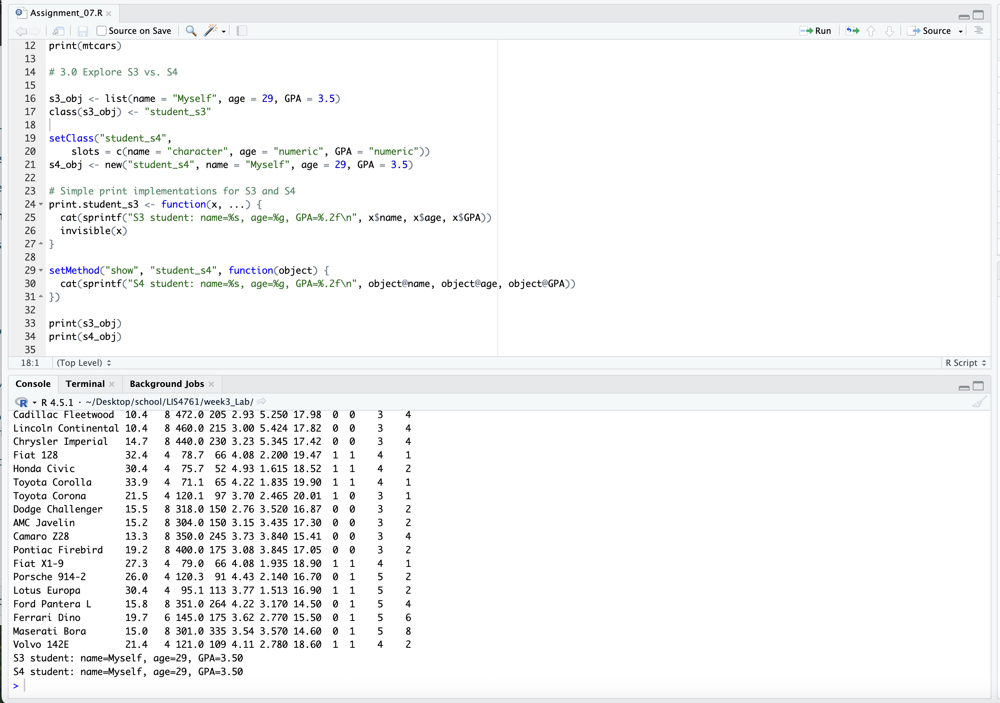

The simpleiest wat to tell the difference between s3 and s4 objects is to find where the object is declared. If the object is declared using the setClass() then it is an s4 object otherwise it is an s3 object. You can also notice some syntax differences when accessing children of it with $ notation for s3 and @ notation for s4. You can also use the isS4 function that returns True or False. To determine an object type you can use functions like typeof(x) or mode(x) which results in the data type. The main difference between s3 and s4 is that s4 is far mor stricter than s3. S4 data type requires generics and methods to be explicitly defined while also supporting principals such as inheritance.
